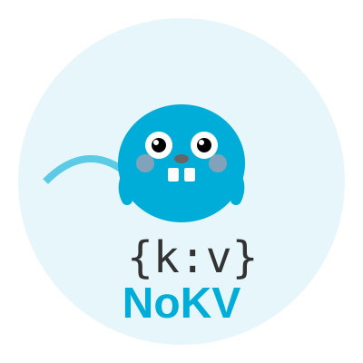
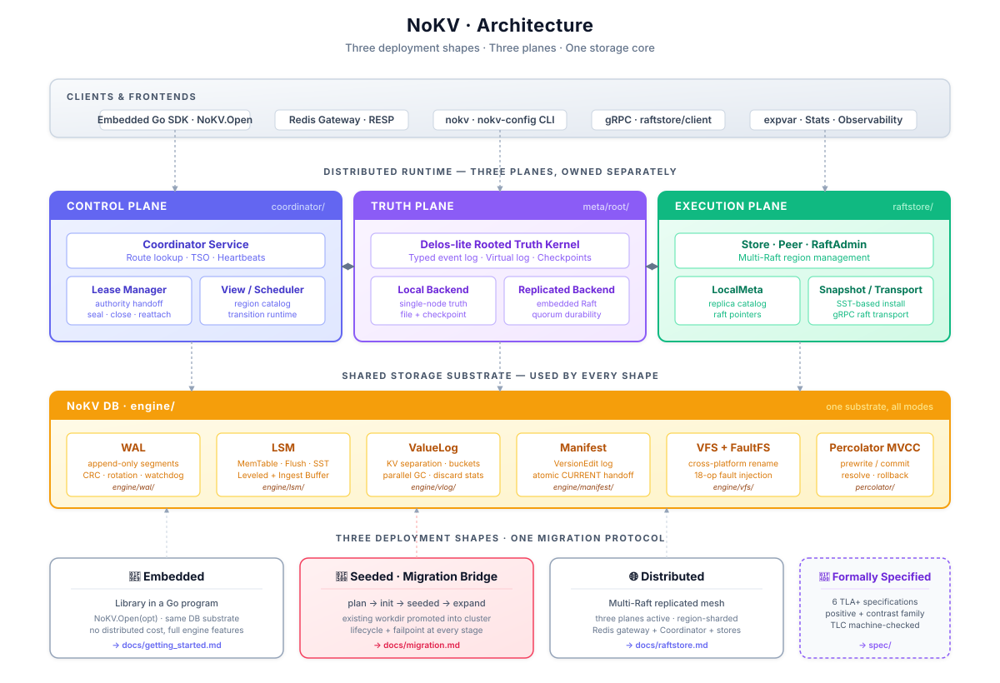

NoKV — Documentation

An open-source namespace metadata substrate for distributed filesystems, object storage, and AI dataset metadata.
Native fsmeta primitives · Own LSM · Own Raft · Own MVCC · Own control plane


NoKV is the open-source counterpart of the “stateless schema layer + transactional KV” pattern that powers Meta Tectonic (over ZippyDB), Google Colossus (over Bigtable), and DeepSeek 3FS (over FoundationDB). The headline service is fsmeta, a namespace metadata API for distributed filesystems / object storage / AI dataset metadata.
The interesting part isn’t the feature list. The interesting part is that layer separation is enforced in code: the fsmeta executor consumes a narrow TxnRunner; the default OpenWithRaftstore adapter owns raftstore wiring; meta/root keeps only lifecycle / authority truth; the storage engine never learns that a namespace exists.
This site is the technical docs hub. For the project landing page, headline benchmarks, and the
Why NoKV vs X?matrix, see the root README.
🧭 Three Audiences, One Substrate
| DFS frontend | Object storage namespace | AI dataset metadata | |
|---|---|---|---|
| Consumer shape | FUSE / NFS / SMB driver | S3-compatible HTTP gateway | training pipeline / scheduler |
| fsmeta primitives used | ReadDirPlus, WatchSubtree, SnapshotSubtree, RenameSubtree | ReadDirPlus for LIST, WatchSubtree for bucket events, SnapshotSubtree for versions, RenameSubtree for prefix moves | SnapshotSubtree for dataset versions, WatchSubtree for checkpoint notification, ReadDirPlus for batch metadata fetch |
| Comparable industrial pattern | Tectonic / Colossus / 3FS / HopsFS | Tectonic / Colossus over object layer | Mooncake / Quiver / 3FS dataset layer |
All three consume the same rooted truth in meta/root and the same native primitives in fsmeta — schema is not specialized to any single consumer.
Deep dive: fsmeta positioning · namespace authority events umbrella
📑 If You Read Only Three Pages
Start here:
- fsmeta.md — namespace metadata service (the headline). Primitives, lifecycle authority, deployment.
- architecture.md — three-layer architecture. Where each module lives, what each layer is allowed to know.
- control_and_execution_protocols.md — the contract between control plane (
coordinator/), execution plane (raftstore/), and rooted truth (meta/root/).
For the authority schema behind those primitives, read notes/2026-04-25-namespace-authority-events-umbrella.md.
🗺️ Read By Interest
🗂️ Namespace metadata service (fsmeta) — the primary product
| Topic | Doc |
|---|---|
| Complete reference (primitives + lifecycle + deployment) | fsmeta.md |
| Positioning v5 (DFS / OSS / AI three-audience) | notes/2026-04-24-fsmeta-positioning.md |
| Namespace authority events umbrella (Mount / SubtreeAuthority / SnapshotEpoch / QuotaFence schema) | notes/2026-04-25-namespace-authority-events-umbrella.md |
| Snapshot subtree MVCC epoch | notes/2026-04-25-snapshot-subtree-mvcc-epoch.md |
| Benchmark results | fsmeta.md · benchmark/fsmeta/results/ |
🔬 Correctness models
| Topic | Location |
|---|---|
| TLA+ and Apalache models for control-plane and metadata transition safety | spec/ · spec/README.md |
| Checked artifacts | spec/artifacts/ |
🏛️ Distributed runtime — the layer below fsmeta
| Topic | Doc |
|---|---|
Rooted truth kernel (meta/root) | rooted_truth.md |
| Coordinator (route / TSO / heartbeats / WatchRootEvents stream) | coordinator.md |
| Coordinator ↔ meta/root deployment separation | notes/2026-04-12-coordinator-meta-separation.md |
| Coordinator-driven store registry and rooted membership | coordinator.md · rooted_truth.md |
| Raftstore overview (store / peer / admin) | raftstore.md |
| Control-plane ↔ execution-plane contract | control_and_execution_protocols.md |
| Standalone → distributed migration | migration.md |
| Recovery model | recovery.md |
| Percolator MVCC 2PC + AssertionNotExist | percolator.md |
| Runtime call chains (sequence diagrams) | runtime.md |
🔧 Storage engine internals — the foundation
The single-node substrate that everything sits on. Independently usable as an embedded Go LSM + Raft library.
| Topic | Doc |
|---|---|
| High-level architecture | architecture.md |
| WAL discipline and replay | wal.md |
| MemTable + ART/SkipList (ART pinned for fsmeta) | memtable.md |
| Flush pipeline | flush.md |
| Leveled compaction + ingest buffer | compaction.md · ingest_buffer.md |
| Value log (KV separation + GC) | vlog.md |
| Manifest semantics | manifest.md |
| Range filter | range_filter.md |
| Block / row cache | cache.md |
| VFS abstraction + FaultFS | vfs.md · file.md |
| Hot-key observer (Thermos) | thermos.md |
| Entry / error model | entry.md · errors.md |
🛠️ Operations and tooling
| Topic | Doc |
|---|---|
CLI reference (nokv — stats / manifest / regions / mount / quota / migrate) | cli.md |
nokv-fsmeta standalone gRPC gateway | fsmeta.md |
nokv-redis secondary Redis-compatible gateway (KV layer only, does not consume fsmeta) | nokv-redis.md |
| Configuration (one JSON file shared by all binaries) | config.md |
| Cluster demo & dashboard | demo.md |
| Scripts layout | scripts.md |
| Stats / expvar / metrics (4 namespaces: executor, watch, quota, mount) | stats.md |
| Testing strategy (failpoints, chaos, restart, migration) | testing.md |
📒 Notable design decision records
All notes under notes/ are dated decision records — they explain the why, not just the what.
- Why WAL is stdio and vlog/SST are mmap
- Compaction and ingest buffer design
- Value log KV separation + HashKV buckets
- Arena memory kernel + adaptive index (SkipList ↔ ART)
- MPSC write pipeline with adaptive coalescing
- VFS abstraction + deterministic reliability testing
- Coordinator ↔ execution layering
- SST-based snapshot install
- Delos-lite rooted-truth roadmap
- Range filter — from GRF, but not quite
- fsmeta positioning v5 (DFS + OSS + AI dataset)
- Namespace authority events umbrella
- Snapshot subtree MVCC epoch
🏗️ Architecture at a Glance

Layer 1 fsmeta ← namespace primitives (Create / ReadDirPlus / WatchSubtree / RenameSubtree / SnapshotSubtree / Link / Unlink with link-count GC)
│
Layer 2 meta/root ← rooted authority truth (Mount / SubtreeAuthority / SnapshotEpoch / QuotaFence)
coordinator ← routing, TSO, store discovery, root-event publish + WatchRootEvents stream
raftstore ← per-region Raft + apply observer
percolator ← 2PC + MVCC + AssertionNotExist + commit-ts retry
│
Layer 3 engine ← LSM + ART memtable + WAL + value log (with per-CF/prefix value separation policy: fsm\x00 → AlwaysInline)
Four boundaries enforced in code:
- fsmeta-first API. Metadata operations expose filesystem/object-namespace shapes directly, instead of forcing users to assemble them from raw KV calls.
- Layer separation enforced. The fsmeta executor consumes a narrow
TxnRunner; the default runtime adapter owns raftstore wiring; lower layers do not import fsmeta. - Multi-gateway-safe. Quota fences are rooted truth; usage counters are data-plane keys updated in the same Percolator transaction as metadata mutations. Subtree handoff uses rooted events plus runtime repair.
- Root-event driven lifecycle.
coordinator.WatchRootEventspushes mount retire / quota fence / pending handoff changes after bootstrap; the monitor interval is reconnect backoff.
⚡ Quick Start
Bring up a full cluster + register a mount + use fsmeta
# 1. Build binaries
make build
# 2. Launch full cluster: meta-root + coordinator + 3 stores + fsmeta gateway
./scripts/dev/cluster.sh --config ./raft_config.example.json
# (Or: docker compose up --build — includes mount-init bootstrap)
# 3. Register a mount (rooted authority)
nokv mount register --coordinator-addr 127.0.0.1:2379 \
--mount default --root-inode 1 --schema-version 1
# 4. (Optional) Set a quota fence
nokv quota set --coordinator-addr 127.0.0.1:2379 \
--mount default --limit-bytes 10737418240 --limit-inodes 10000000
# 5. Use fsmeta from any gRPC client (Go typed client at fsmeta/client/)
# or embedded Go: see fsmetaexec.OpenWithRaftstore in the root README
# 6. Inspect runtime state
curl http://127.0.0.1:9101/debug/vars | jq '.nokv_fsmeta_executor, .nokv_fsmeta_watch, .nokv_fsmeta_quota, .nokv_fsmeta_mount'
nokv stats --workdir ./artifacts/cluster/store-1
Full walkthrough: getting_started.md · CLI reference: cli.md
🔗 Jump Points
| fsmeta service | The headline product — namespace metadata API |
| Formal specs | TLA+ / Apalache models for transition safety |
| CLI surface | nokv — stats, manifest, regions, mount, quota, migrate |
| Topology config | One JSON file shared by scripts, Docker, all CLI |
| Coordinator | Route / TSO / heartbeat / root-event subscribe |
| Rooted truth | meta/root typed event log |
| Percolator / MVCC | 2PC primitives in distributed mode |
| Runtime call chains | Function-level sequence diagrams |
| Testing | Failpoints, chaos, restart, migration |
| NoKV Redis | Secondary RESP gateway (KV layer only) |
| SUMMARY.md | Full mdbook table of contents |
Built from scratch — no external storage engine, no external Raft library, no external coordinator.